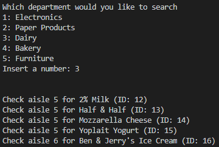

Store Helper
This group project was developed in Python, and is designed to help users find and buy items in a fictional warehouse store. The three main features of this program are buy, store, and find. Typing 'buy' in the command line allows the user to add items to cart based on item ID. Typing 'store' allows the user to search for items either directly by name or via other means designed to help narrow an item down. Typing 'find' allows the user to find the general item list based on department. Below are some sample screenshots from the program, which is completely run from the command line.

